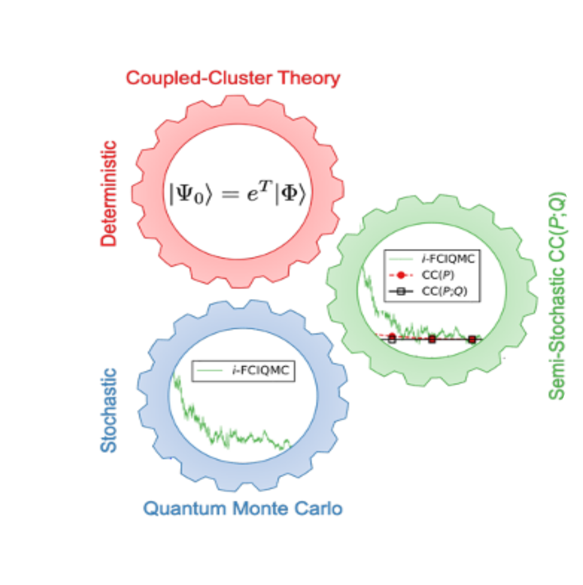

My Projects
Semi-stochastic CC(P;Q)
The recently proposed approach to excited electronic states, in which the deterministic equation-of-motion coupled-cluster (EOMCC) framework is merged with stochastic configuration interaction Quantum Monte Carlo (CIQMC) computations [J.E. Deustua et al., J. Chem. Phys. 150, 111101 (2019)], is combined with the noniterative energy corrections derived from the CC(P;Q) formalism. By examining vertical excitations in CH+ at the equilibrium and stretched geometries and adiabatic excitations in CH and CNC, we demonstrate that the resulting semi-stochastic CC(P;Q) methodology converges target high-level energetics, represented in this study by the EOMCC method with singles, doubles, and triples, in the early stages of CIQMC propagations. Read More
We recently proposed a semi-stochastic approach to converging high-level coupled-cluster (CC) energetics, such as those obtained in the CCSDT calculations with singles, doubles, and triples (CCSDT), in which the deterministic CC(P;Q) framework is merged with the stochastic configuration interaction Quantum Monte Carlo propagations [J. E. Deustua, J. Shen, and P. Piecuch, Phys. Rev. Lett. 119, 223003 (2017)]. In this work, we investigate the ability of the semi-stochastic CC(P;Q) methodology to recover the CCSDT energies of the lowest singlet and triplet states and the corresponding singlet–triplet gaps of biradical systems using methylene, (HFH)−, cyclobutadiene, cyclopentadienyl cation, and trimethylenemethane as examples. Read More
H3+ formation from Methyl Halogens and Pseudohalogens

The formation of H3+ following the double ionization of small organic compounds via a roaming mechanism, which involves the generation of H2 and subsequent proton abstraction, has recently garnered significant attention. Nonetheless, a cohesive model explaining trends in the yield of H3+ characterizing these unimolecular reactions is yet to be established. We report yield and femtosecond time-resolved measurements following the strongfield double ionization of CH3X molecules, where X = OD, Cl, NCS, CN, SCN, and I. These measurements, combined with double-ionization-potential equation-of-motion coupled-cluster ab initio calculations used to determine the geometries and energetics of CH3X2+ dications, are employed to identify the key factors governing the formation of H3+ in certain doubly ionized CH3X species and its absence in others. We also carry out ab initio molecular dynamics simulations to obtain detailed microscopic insights into the mechanism, yields, and timescales of H3+ production. We find that the excess relaxation energy released after double ionization of CH3X molecules combined with substantial geometrical distortion that favors H2 formation prior to proton abstraction boost the generation of H3+. Our study provides useful guidelines for examining alternative sources of H3+ in the universe. Read More